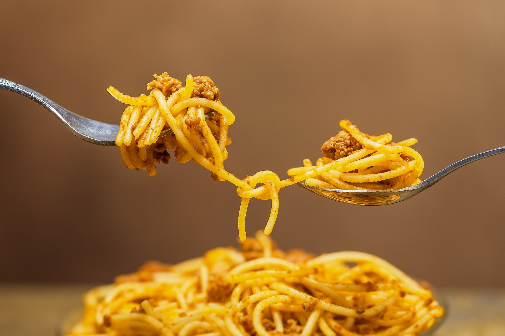

- PIZZA
- SPAGHETTI
- HAMBURGER
SPHAGETTI
Spaghetti is a type of elongated cylindrical pasta. It is counted as a synonym for Italian cuisine and is eaten with ordinary tomato sauce.

Content per serving
100g
Calories (kcal) 157
Local 0.9 g
0.2 g of saturated fat
Polyunsaturated fat 0.3 g
Single unsaturated fat 0.1 g
Trans fat 0 g
Cholesterol 0 mg
Sodium 1 mg
Potassium 44 mg
Carbohydrate 31 g
Dietary fiber 1.8 g
Sugar 0.6 g
Protein 6 g